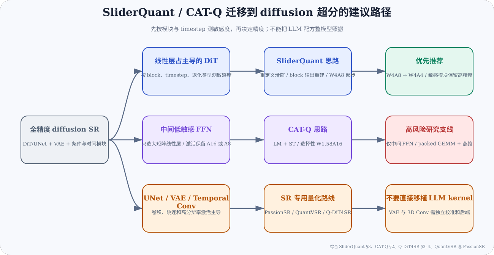
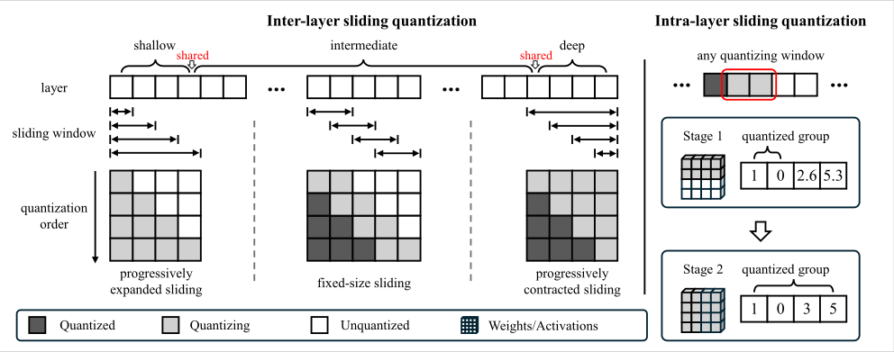
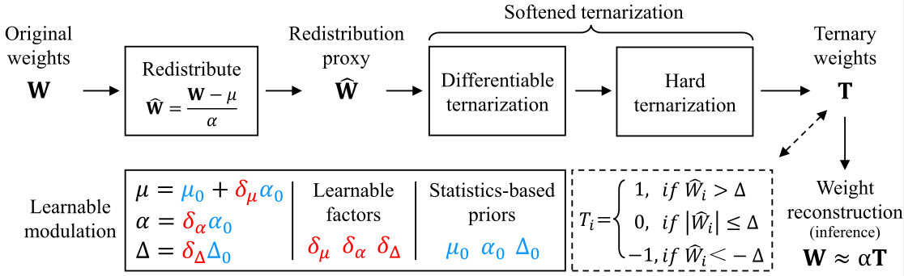
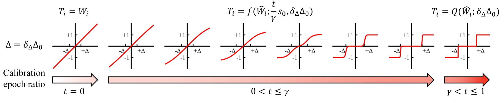
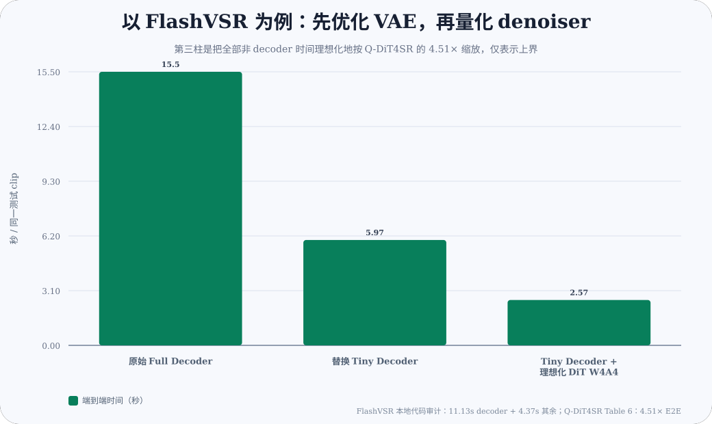

核心结论
方法脉络
关键证据
结论与推荐顺序
两篇方法都能提供启发，但 SliderQuant 更像可迁移的优化框架，CAT-Q 更像需要专用 kernel 与蒸馏支撑的极限压缩实验。
如果目标是尽快让 diffusion-based SR 获得可测的端到端收益，我建议优先采用现有 diffusion/DiT 低比特后端，把 denoiser 做到 W4A8，再迁移 SliderQuant 的 overlapping-window reconstruction 来降低同一 bit-width 下的质量损失。第二阶段再进入 W4A4，并加入 timestep-aware activation precision。
CAT-Q 不应作为第一阶段。1.58-bit 权重理论压缩极大，但 SR 是连续像素回归，薄线、重复纹理、颜色和高频残差会放大微小误差；CAT-Q 在 LLM 通用任务上仍存在明显精度差距，附录也承认复杂推理任务严重退化。它更适合只 ternarize 中间低敏感 FFN，首尾、QKV、条件、时间、输出、temporal blocks 保留 W4/W8 或 FP16。
对于 UNet/VAE 占主导的模型，直接移植两篇 LLM 代码价值有限。应该以 PassionSR、QuantVSR、Q-Diffusion 等为骨架，因为这些方法已经处理卷积、skip connection、timestep distribution 和 VAE 输入误差传播。

SliderQuant：方法、收益与迁移价值
SliderQuant 的关键贡献不是某个新整数格式，而是让相邻层共同吸收量化误差，并对模型首尾的高敏感区域投入更多优化。
论文首先在 Llama/Qwen 上观察到：浅层和深层比中间层更敏感，第一层和最后一层最敏感；顺序量化越多，误差逐层累积。Inter-layer sliding 为前四层使用 progressively expanded window，以第一层为 anchor；中间层使用 size=2、stride=1 的 overlapping window；后四层使用 progressively contracted window，以最后一层为 anchor。
Intra-layer sliding 再把当前窗口中的权重/激活按 γ=0.5 分两阶段增量量化，避免一次把完整矩阵推入低比特造成优化突变。每层学习 channel scaling 和 rank-4 LoRA 修正，校准结束后都吸收到原权重，因此默认版本不增加推理算子。
默认校准使用 128 个样本、每样本 2048 tokens；W4A4 等设置训练 20 epochs，W2A16 为 60 epochs。Llama2-7B W4A4 在 A6000 上 20 epochs 约 6.14 小时。它能做 W4A16/W3A16/W2A16/W4A4，但论文部署速度只用 llama.cpp 测了 weight-only 模型，最强 W4A4 质量结果并没有对应 diffusion-style INT4 activation kernel benchmark。
迁移到 DiT SR 时，不应照搬“前四层/后四层”。需要先测 block × timestep × degradation 的敏感度，再把高敏感 block 设为更大窗口或高 bit；overlap 的输出 reconstruction 应在多个噪声时刻和 LR 条件上共同优化。SliderQuant 真正带来的预期收益是同一 W4 bit budget 下更好质量，而不是独立于 kernel 的额外速度。

CAT-Q：1.58-bit PTQ 的能力与边界
CAT-Q 把任意预训练线性权重压成 {−1,0,+1}，但其质量恢复来自校准优化；真实速度则依赖 packed ternary kernel。
Learnable Modulation 通过三个因子调整权重均值 μ、scale α 和 ternary threshold Δ，让高精度权重先变换到更易三值化的分布；部署时仍采用零点自由的 W≈αT，μ 只作为训练期 redistribution proxy，因此每组只需保存 α 和 packed ternary codes。
Softened Ternarization 用连续 tanh transition 从 identity 平滑逼近 ternary，再进入 hard ternarization。默认 60 epochs，其中 γ=0.8 的阶段用于 differentiable ternarization，剩余 20% 用 hard ternarization；默认 512×2048-token calibration、group size 128。窗口输出 reconstruction 直接复用 SliderQuant 的 sliding-layer framework。
论文在 llama.cpp 中使用 TQ1_0/TQ2_0：RTX 4090 上，CAT-Q 对 Qwen3-4B 相对 W4A16 是 320.34/225.91≈1.42×，对 Llama2-7B 是 281.66/174.34≈1.62×；weight memory 相对 W4 约再减半。这说明 packed ternary 可以工作，但论文明确承认当前通用 1.58-bit kernel 不足、部署仍未充分优化。
更重要的是精度：Qwen3-4B 的五项平均准确率从 FP16 68.25 降至 W1.58A16 的 57.06，Llama2-7B 从 69.04 降至 57.69；附录称复杂数学/代码任务有严重退化。对于要求高频细节的 SR，这种容量损失不能仅凭 block MSE 假设可接受。


为什么 LLM 加速数字不能直接套到 diffusion SR
SliderQuant 在 RTX 4090 上的 Llama2-7B W4A16/W2A16 分别比 FP16 decode 快 2.51×/3.64×，但 A100 上只有 1.69×/1.79×，已经说明同一算法的收益受 kernel 与硬件约束。CAT-Q 的 GPU 加速也是相对 llama.cpp W4/W2，而非 FP16 diffusion。
真正可参考的是 diffusion 原生实现：Q-DiT4SR 在 RTX 4090、batch 16 下把 W4A4 DiT Real-ISR 的总时延从 3099.30 ms 降到 686.50 ms，即 4.51×；其中 quantized linear layers 8.99×，非线性/未量化算子只加速 2.97×，后者成为 Amdahl 瓶颈。
| 维度 | LLM 论文部署 | Diffusion SR |
|---|---|---|
| 主算子 | batch-1 autoregressive GEMV/GEMM | 大空间 token GEMM、attention、Conv2d/3d、VAE、raster-like upsampling |
| 激活规模 | 逐 token decode，KV cache 主导 | 高分辨率 H×W×T activation 常主导显存和带宽 |
| 误差传播 | 跨层后影响 token 概率 | 跨 block 且可能跨多个 denoising timesteps 反复累积 |
| 质量目标 | perplexity/任务准确率 | PSNR/SSIM/LPIPS、边缘、纹理、颜色、视频时序一致性 |
| 低比特后端 | llama.cpp Q2/Q4/TQ formats | 需要 DiT INT4/INT8 Triton/CUDA；ternary Conv/DiT kernel 尚不通用 |
| 不能量化部分 | norm、softmax、routing | 再加 timestep/condition、skip、VAE、temporal blocks 和输出头等敏感模块 |
模块级适用性评估
| 模块 | SliderQuant 迁移 | CAT-Q 迁移 | 初始建议 |
|---|---|---|---|
| DiT 中间 FFN | 高：窗口输出重建直接适用 | 中：最适合选择性 ternary | 先 W4A8；稳定后试 W1.58A16 |
| Self/Cross-Attn QKV/O | 中高：需 timestep/token-aware activation | 低到中：softmax 前误差敏感 | W4/W8；softmax 与归一化 FP16 |
| 首尾 block、input/output proj | 高敏感，应扩窗或高精度 | 不建议 ternary | W8/FP16 |
| Timestep / condition / LR adapter | 需要纳入条件分布校准 | 不建议 ternary | W8/FP16 |
| Video temporal attention | 可做，但需时序 loss | 高风险 | 先 W8A8，空间 FFN 再 W4 |
| UNet Conv / skip | 滑窗拓扑需重写 | 缺少 ternary Conv 后端 | 采用 PassionSR/Q-Diffusion/QuantVSR |
| VAE encoder/decoder | LLM 配方不匹配 | 不适合 | 专用 8/6-bit Conv 或结构替换 |
| Norm / Softmax / sampling | 不量化或高精度 | CAT-Q 也保留 softmax FP | FP16/BF16 |
已有 SR 量化工作给出的现实基线
- Q-DiT4SR： 直接针对 DiT Real-ISR，W4A4 实测 4.51× E2E、峰值显存 15085.99→3974.64 MiB；但仍会在极细、重复、高对比纹理上出现颜色偏移、断边和不稳定纹理。
- QuantVSR： 针对 diffusion VSR 的时空复杂度与量化偏差，4-bit UNet 参数/操作量减少 84.39%/82.56%；它使用跨 50 timesteps 抽取 5 个时刻、共 1800 个中间 pair 的视频校准集。
- PassionSR： 针对 one-step UNet+VAE SR，W8A8/W6A6 保持较好视觉质量，并单独校准 VAE encoder、decoder 和 UNet，说明 VAE 不能被当作普通 LLM linear block。
- 这些工作共同证明：layer sensitivity、timestep dynamics、high-frequency detail 和 temporal consistency 是 SR 特有约束；SliderQuant/CAT-Q 只有与这些机制结合才有竞争力。
以 FlashVSR 为例的端到端收益边界
此前本地代码审计中，FlashVSR 原始 Wan VAE decoder 用时 11.13 s，占 15.50 s 总时延的 71.8%；Tiny Conditional Decoder 将 decoder 降到 1.60 s，端到端变为 5.97 s。
因此在原始 full-decoder 流水线里，即使 denoiser 被无限加速，端到端也最多约 15.50/11.13=1.39×；应先改 decoder。完成 Tiny Decoder 后，假设其余 4.37 s 全部都能获得 Q-DiT4SR 同级 4.51×（非常乐观），总时延下界约为 1.60+4.37/4.51=2.57 s，相对 5.97 s 再快 2.32×。真实收益会更低，因为 4.37 s 中不全是可量化线性层。

建议实验矩阵
先证明 W4 路线的真实端到端收益，再把 ternary 当作选择性压缩实验；不要反过来。
- 校准集按 退化类型 × timestep × 图像/视频内容 分层采样。Image SR 可从 Q-DiT4SR 的 32 张 LR 图起步，再扩到 128/512；Video SR 至少覆盖早中晚噪声阶段和不同运动强度。
- Slider window loss 不只做 feature MSE：加入噪声/velocity target、high-frequency Fourier/edge loss、LPIPS；视频再加入 warp consistency、tLPIPS 或 flicker 指标。
- 默认保留 FP16/BF16：首尾 block、time/condition embeddings、norm、softmax、最终输出层；视频 temporal blocks 和 VAE 先保持高精度，完成单独消融后再降低。
- 每个配置必须分别报告权重大小、峰值 activation memory、单 denoiser step、VAE、端到端 p50/p95；只报告 Ops 或压缩率不算效率提升。
| 阶段 | 配置 | 关键目的 | 停止/继续条件 |
|---|---|---|---|
| A0 | FP16/BF16 baseline | 逐模块 profile：DiT、attention、VAE、temporal、I/O | 建立 p50/p95、峰值显存和质量基线 |
| A1 | SR-native W8A8 | 验证部署 kernel 与 calibration pipeline | 端到端必须真实加速且质量近基线 |
| A2 | W4A8 + 普通 block reconstruction | 建立 Q-DiT4SR/SVDQuant/QuantVSR 对照 | 定位敏感 block/timestep |
| A3 | SliderQuant-SR W4A8 | 验证 adaptive overlapping windows 是否优于固定窗口 | 同 bit 下提升纹理/时序质量 |
| A4 | SliderQuant-SR W4A4 | 加入 timestep-aware A4/A6/A8 混合精度 | 有真实 INT4 kernel 加速再保留 |
| B1 | CAT-Q selective W1.58A16 | 仅 ternary 中间低敏感 FFN | 必须有 packed GEMM 且质量损失可恢复 |
| B2 | CAT-Q full-linear stress test | 测极限压缩，不作为首个部署候选 | 若纹理/颜色/时序明显崩坏则转蒸馏/QAT |
局限与开放问题
- SliderQuant 与 CAT-Q 没有在 diffusion、图像恢复或超分模型上做实验，本报告的迁移结论属于架构与工程推断。
- LLM llama.cpp 的 batch-1 decoding throughput 与 diffusion 的大矩阵/高分辨率 workload 不同，不能直接预测 SR latency。
- CAT-Q 当前公开仓库重点发布 checkpoints、evaluation 和 packed llama.cpp deployment；README 仍注释着 training code 准备发布，迁移需要根据论文重实现校准。
- Q-DiT4SR 的 4.51× 来自特定 DiT4SR、RTX 4090 48GB、batch 16；不同 SR backbone、分辨率和 batch 下会变化。
- FlashVSR 第三柱是 Amdahl 乐观上界，假设全部非 decoder 时间都能获得 4.51×，实际不可直接达到。
证据与推断边界
- 论文明示：SliderQuant 的滑窗结构、校准设置和 llama.cpp 部署；CAT-Q 的 LM/ST、W1.58 格式、LLM 精度与 ternary 部署。
- 论文明示：Q-DiT4SR 在 SR 任务上的 W4A4 4.51× 实测，以及低比特下的高频纹理问题。
- 本文推断：SliderQuant-SR、selective CAT-Q 和建议保留高精度的具体模块，是基于 SR 结构与现有量化证据提出的实验方案。
- 任何 1.58-bit SR 加速结论都必须以专用 kernel 和端到端 profile 为准；仅得到 ternary checkpoint 不等于获得速度。
来源与版本
核查时间：2026-11-17（Asia/Shanghai）。主论文、公开代码、直接相关 SR 量化工作与本地 FlashVSR runtime audit 分别核对；迁移建议尚未在目标模型上实测。
- SliderQuant paper — ICLR 2026
- SliderQuant code — 核查 commit bf2641ec
- CAT-Q paper — ICML 2026 Oral
- CAT-Q / BitTern code — 核查 commit 5a8fcd4f
- Q-DiT4SR — DiT Real-ISR W4A4/W4A6
- QuantVSR — Diffusion video SR PTQ
- PassionSR — One-step UNet+VAE SR quantization
- ViDiT-Q — Diffusion Transformer W4A8/W8A8 + kernels
- SVDQuant — W4A4 + Nunchaku engine